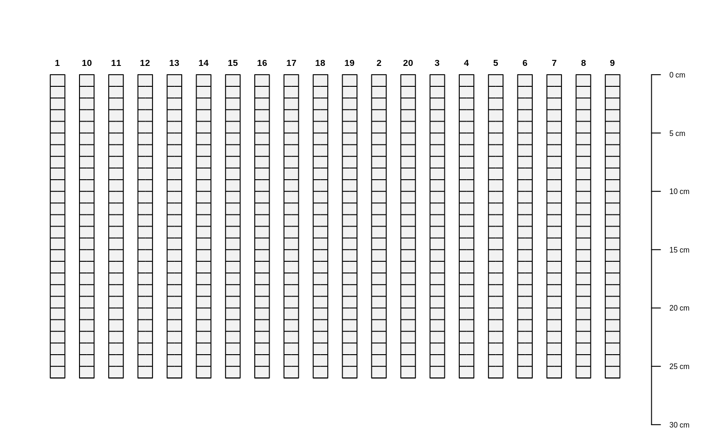

R/SoilProfileCollection-slice-methods.R
slice-methods.RdSlicing of SoilProfileCollection Objects
slice.fast(object, fm, top.down = TRUE, just.the.data = FALSE, strict = TRUE)a SoilProfileCollection
A formula: either integer.vector ~ var1 + var2 + var3 where
named variables are sliced according to integer.vector OR where all
variables are sliced according to integer.vector: integer.vector ~ ..
logical, slices are defined from the top-down: 0:10 implies 0-11 depth units.
Logical, return just the sliced data or a new SoilProfileCollection object.
Logical, should the horizonation be strictly checked for self-consistency?
Either a new SoilProfileCollection with data sliced according to fm, or a data.frame.
slab() and slice() are much faster and require less
memory if input data are either numeric or character.
By default, slices are defined from the top-down:
0:10 implies 0-11 depth units.
D.E. Beaudette, P. Roudier, A.T. O'Geen, Algorithms for quantitative pedology: A toolkit for soil scientists, Computers & Geosciences, Volume 52, March 2013, Pages 258-268, 10.1016/j.cageo.2012.10.020.
library(aqp)
# simulate some data, IDs are 1:20
d <- lapply(1:20, random_profile)
d <- do.call('rbind', d)
# init SoilProfileCollection object
depths(d) <- id ~ top + bottom
head(horizons(d))
#> id top bottom name p1 p2 p3 p4 p5 hzID
#> 1 1 0 28 H1 -8.11480 -4.0385981 2.344391 -4.589098 4.091567 1
#> 2 1 28 33 H2 -12.31050 -5.5446737 7.390140 7.972591 1.350237 2
#> 3 1 33 59 H3 -15.19766 -3.8702909 6.107026 1.339378 -2.038242 3
#> 4 10 0 9 H1 -9.14086 -2.5672940 1.884982 6.057878 -3.203610 4
#> 5 10 9 29 H2 -15.64414 -0.4422915 -3.941346 14.046647 -14.451331 5
#> 6 10 29 59 H3 -20.32191 4.6205974 -5.215878 24.373036 -15.486156 6
# generate single slice at 10 cm
# output is a SoilProfileCollection object
s <- slice(d, 10 ~ name + p1 + p2 + p3)
#> Note: aqp::slice() will be deprecated in aqp version 2.0
#> --> Please consider using the more efficient aqp::dice()
# generate single slice at 10 cm, output data.frame
s <- slice(d, 10 ~ name + p1 + p2 + p3, just.the.data=TRUE)
#> Note: aqp::slice() will be deprecated in aqp version 2.0
#> --> Please consider using the more efficient aqp::dice()
# generate integer slices from 0 - 26 cm
# note that slices are specified by default as "top-down"
# e.g. the lower depth will always by top + 1
s <- slice(d, 0:25 ~ name + p1 + p2 + p3)
#> Note: aqp::slice() will be deprecated in aqp version 2.0
#> --> Please consider using the more efficient aqp::dice()
par(mar=c(0,1,0,1))
plot(s)

# generate slices from 0 - 11 cm, for all variables
s <- slice(d, 0:10 ~ .)
#> Note: aqp::slice() will be deprecated in aqp version 2.0
#> --> Please consider using the more efficient aqp::dice()
print(s)
#> SoilProfileCollection with 20 profiles and 220 horizons
#> profile ID: id | horizon ID: sliceID
#> Depth range: 11 - 11 cm
#>
#> ----- Horizons (6 / 220 rows | 10 / 12 columns) -----
#> id sliceID top bottom name p1 p2 p3 p4 p5
#> 1 1 0 1 H1 -8.1148 -4.038598 2.344391 -4.589098 4.091567
#> 1 2 1 2 H1 -8.1148 -4.038598 2.344391 -4.589098 4.091567
#> 1 3 2 3 H1 -8.1148 -4.038598 2.344391 -4.589098 4.091567
#> 1 4 3 4 H1 -8.1148 -4.038598 2.344391 -4.589098 4.091567
#> 1 5 4 5 H1 -8.1148 -4.038598 2.344391 -4.589098 4.091567
#> 1 6 5 6 H1 -8.1148 -4.038598 2.344391 -4.589098 4.091567
#> [... more horizons ...]
#>
#> ----- Sites (6 / 20 rows | 1 / 1 columns) -----
#> id
#> 1
#> 10
#> 11
#> 12
#> 13
#> 14
#> [... more sites ...]
#>
#> Spatial Data:
#> [EMPTY]
# note that pct missing is computed for each slice,
# if all vars are missing, then NA is returned
d$p1[1:10] <- NA
s <- slice(d, 10 ~ ., just.the.data=TRUE)
#> Note: aqp::slice() will be deprecated in aqp version 2.0
#> --> Please consider using the more efficient aqp::dice()
print(s)
#> id top bottom name p1 p2 p3 p4 p5
#> 1 1 10 11 H1 NA -4.0385981 2.344391 -4.589098 4.0915670
#> 2 10 10 11 H2 NA -0.4422915 -3.941346 14.046647 -14.4513307
#> 3 11 10 11 H2 NA -10.3652288 12.298109 -6.787727 -1.0061679
#> 4 12 10 11 H1 12.2478451 4.3251815 1.382016 -13.858707 -4.2897974
#> 5 13 10 11 H1 4.1093180 5.8979316 -3.498424 -4.977782 0.4193661
#> 6 14 10 11 H1 5.3559125 -6.6952467 7.802510 -3.715831 3.6439653
#> 7 15 10 11 H1 -3.7011259 9.1723723 -5.099757 17.253590 -1.2091909
#> 8 16 10 11 H1 9.7621707 -1.6365155 -2.531768 14.951041 1.2118246
#> 9 17 10 11 H1 2.2858269 0.1033124 10.846833 1.974751 -3.0724983
#> 10 18 10 11 H2 -3.2555536 4.7075869 1.808541 -15.946827 -8.1252504
#> 11 19 10 11 H2 19.4158483 8.5939950 -3.519748 14.397891 -8.7977167
#> 12 2 10 11 H1 0.3511825 8.5255555 -2.147085 6.427000 -13.3832370
#> 13 20 10 11 H1 1.4091895 -1.0522815 -11.899534 5.642722 25.7662942
#> 14 3 10 11 H1 -6.0493603 0.8389426 -4.750750 -1.339424 5.9589200
#> 15 4 10 11 H1 12.2250460 -2.4268264 1.124063 -1.161578 -7.8328957
#> 16 5 10 11 H2 0.6967898 -0.7419808 -7.570307 -1.557993 -9.8805954
#> 17 6 10 11 H1 8.4857760 7.3645801 -3.566509 -9.246360 -8.9077010
#> 18 7 10 11 H1 9.2938257 4.3802295 -10.987727 -1.563246 15.2099849
#> 19 8 10 11 H1 -0.4983424 -3.0795379 5.145072 12.804704 -5.2546552
#> 20 9 10 11 H1 13.3712670 -8.9597712 10.985822 -4.556075 2.1875744
#> hzID .pctMissing
#> 1 1 0.1428571
#> 2 5 0.1428571
#> 3 9 0.1428571
#> 4 13 0.0000000
#> 5 19 0.0000000
#> 6 24 0.0000000
#> 7 30 0.0000000
#> 8 33 0.0000000
#> 9 38 0.0000000
#> 10 45 0.0000000
#> 11 49 0.0000000
#> 12 52 0.0000000
#> 13 58 0.0000000
#> 14 64 0.0000000
#> 15 67 0.0000000
#> 16 71 0.0000000
#> 17 75 0.0000000
#> 18 78 0.0000000
#> 19 83 0.0000000
#> 20 88 0.0000000
if (FALSE) {
##
## check sliced data
##
# test that mean of 1 cm slices property is equal to the
# hz-thickness weighted mean value of that property
data(sp1)
depths(sp1) <- id ~ top + bottom
# get the first profile
sp1.sub <- sp1[which(profile_id(sp1) == 'P009'), ]
# compute hz-thickness wt. mean
hz.wt.mean <- with(
horizons(sp1.sub),
sum((bottom - top) * prop) / sum(bottom - top)
)
# hopefully the same value, calculated via slice()
s <- slice(sp1.sub, 0:max(sp1.sub) ~ prop)
hz.slice.mean <- mean(s$prop, na.rm=TRUE)
# same?
if(!all.equal(hz.slice.mean, hz.wt.mean))
stop('there is a bug in slice() !!!')
}